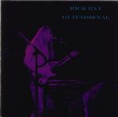

| Artist: | Rick Ray |
| Title: | Guitarsenal |
| Label: | Neurosis Records |
| Length(s): | 72 minutes |
| Year(s) of release: | 2000 |
| Month of review: | [01/2001] |
| 1) | Looking Into Your Eyes | 4.32 |
| 2) | Same Here | 4.04 |
| 3) | Taken Control | 4.11 |
| 4) | The Rendez-vous | 4.33 |
| 5) | If I Had The Chance | 4.50 |
| 6) | Mellow-D | 3.19 |
| 7) | The Atom Smasher | 6.46 |
| 8) | Bottom Of The Heap | 3.57 |
| 9) | People Turn | 4.28 |
| 10) | Nine Again | 4.37 |
| 11) | Holding On To Hope | 4.57 |
| 12) | Floating | 3.56 |
| 13) | Terry The Duplicate | 5.28 |
| 14) | It Was O.K. A Minute Ago | 3.28 |
| 15) | Money From Nothing | 5.01 |
| 16) | An Unexpected Moment | 4.20 |
Same Here opens with electric and acoustic guitars in a rather relaxed fashion. The song is less intense than the previous, but does still enjoy the fast waves of notes on the guitar. It also contains a rather distinctive melodic passage. Again, the percussion is a problem when its comes energy in tracks of Ray, making the songs lack in groove.
Rick Schultz blows his clarinet on Taken Control, which is a break filled track. As always Schultz uses his clarinet in the way Ray uses his guitar: very quickly short notes.
The Rendezvous has the solo's of Rick Ray, but also a rather low bass sound and some incidental strummings. All in all a rather varied track. If I Had The Chance is weak love song, but Mellow-D is something else entirely. It opens with clear acoustic guitar, quite nicely arranged and played.
The Atom Smasher means a return to the electric guitar, played a bit bluesy in this track. It is followed by the instrumental Bottom Of The Heap which is of similar type.
People Turn is a bit of a mellow easy-going vocal track, again with somewhat bluesy, now relaxed, fingerpicking. Nine Again has a nice build-up in the track, but it does sound familiar to me. The going of the track is maybe a bit too easy. The acoustic opening of Holding On To Hope promises something, but the vocal part is just not good enough, too straightforward both melodically as lyrically. The purely instrumental parts are okay.
After Floating we come to the darkish Terry The Duplicate. This is a track where the vocals have been doubled and Big Brotherish vocals have been added. For the rest the music is dominated by rhythm guitar riffs, but does of course have its share of guitar soloing. A track which is typical for a large category of Ray's songs, but a type not much heard on this album yet.
It Was Okay A Minute Ago is dominated by melodic guitar playing. The soloing is quite good and I feel that is more at home in these tracks than the vocal tracks. The guitar speaks for him. On Money From Nothing the clarinet of Schultz returns. The vocals are very low and sound unnatural, which is the idea. The soloing of Ray is meandering and rather chaotic, while Schultz repetitively tries to uphold a certain structure.
Final track is An Unexpected Moment which opens with sparse guitar and has some keyboards thrown in as well. Then the track becomes one of those tracks where the guitar soloing of Ray becomes quite intense (compare to the opener) without losing sight of melody.
I like the artwork better the way it is on this disc.